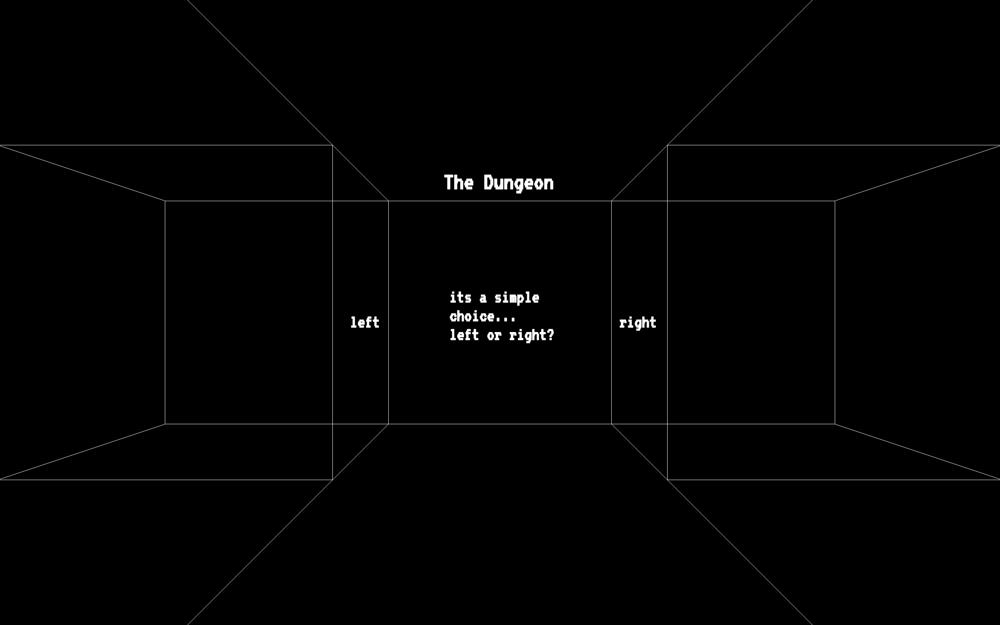
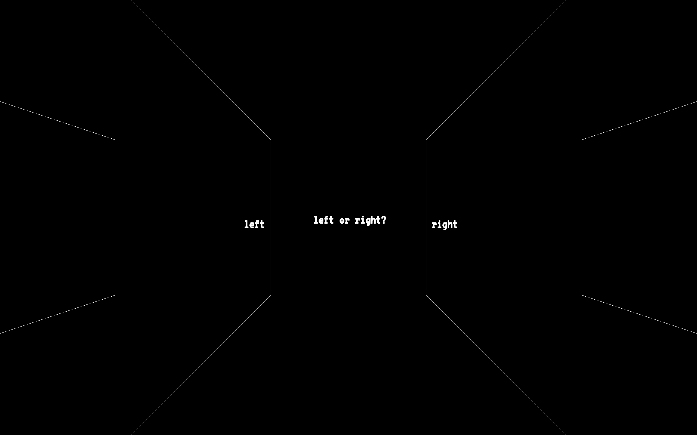

The Dungeon
Hyperlink Narrative
The Dungeon is a simple Hyperlink Narrative I designed. It's components are simple and all pages are shown below. The Dungeon presents the visitor with tow options left or right. Either option takes the user to the next page which presents the same options once again. From here on clicking the left or right option will refresh the page creating an illusion of arrive to a new one while in reallity staying in place. This is meant to create a never ending, getting lost sensation within a hyperlink page.

